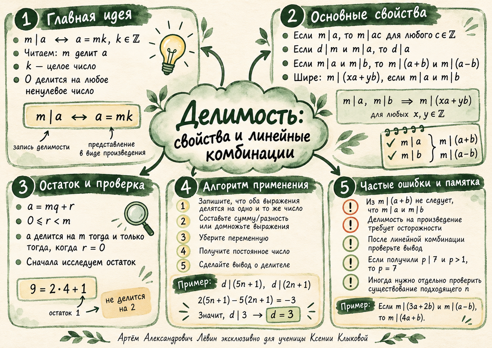

Олимпиадная математика · 15 октября 2026
Делимость.
Искусство исключать
Когда два выражения делятся на одно число, их можно сочетать так, чтобы исчезла неизвестная. Это превращает условие задачи в точный вывод о возможных делителях.

Читаем делимость
Переводим символ в равенство.
Для целых чисел a и m при m ≠ 0 запись m ∣ a означает, что a можно представить произведением m на некоторое целое число.
Примеры: 4 ∣ 20, поскольку 20 = 4 · 5; 7 ∣ (−56), поскольку −56 = 7 · (−8); 17 ∣ 0, поскольку 0 = 17 · 0.
Что говорит остаток
Делимость — это нулевой остаток.
При делении целого числа a на натуральное m получаем единственные целые q и r:
Число a делится на m тогда и только тогда, когда r = 0.
Для сравнения, 28 = 4 · 7 + 0 и 4 ∣ 28.
Какие переходы законны
Умножение, цепочка делителей, сумма.
Умножение и транзитивность
Если a = mk, то ca = m(ck). Например, из 24 ∣ a следует 8 ∣ a и далее 8 ∣ 7a. Если d ∣ m и m ∣ a, то d ∣ a.
При c ≠ 0 равносильны записи m ∣ a и cm ∣ ca. Однако cm ∣ a из них, вообще говоря, не следует.
Сложение и вычитание
Если a = mk, b = mt, то ua + vb = m(uk + vt). В частности, делитель сохраняется при сложении и вычитании кратных ему чисел.
Доказательство в одно действие
Работаем с выражениями как с целыми объектами.
Пишем x = 2k, y = 2t при целых k и t. Тогда
Скобка — целое число, делимость доказана.
Да. Сложим два выражения, кратных m:
Следовательно, m ∣ (4a + b).
Убрать неизвестное
Два выражения дают одно число.
Пусть натуральное p > 1 делит 3n + 2 и 8n + 3. Умножим первое выражение на 8, второе на 3 и вычтем:
Значит, p ∣ 7, откуда p = 7. Теперь проверим, когда оба исходных числа действительно кратны семи.
При n = 7t + 4 и целом t ≥ 0 получаем 3n + 2 = 7(3t + 2) и 8n + 3 = 7(8t + 5). Например, n = 4 даёт 14 и 35.
Путь А · 10 задач
Переходим от обозначения к олимпиадному доказательству.
Запишите краткое обоснование перед ответом. Раскрывайте ориентир после самостоятельной попытки.
- Найдите целое k, для которого −72 = 9k. Запишите делимость.
Проверить
k = −8; 9 ∣ (−72).
- Представьте 95 = 7q + r, где 0 ≤ r < 7. Делится ли 95 на 7?
Проверить
q = 13, r = 4; 7 ∤ 95.
- Известно, что 12 ∣ a. Докажите, что 3 ∣ 5a.
Ориентир
3 ∣ 12, значит, 3 ∣ a; затем 3 ∣ 5a.
- 6 ∣ x и 6 ∣ y. Докажите 6 ∣ (5x − 2y).
Ориентир
Представьте x = 6k, y = 6t и вынесите 6 за скобки.
- 11 ∣ a и 11 ∣ (a+b). Докажите, что 11 ∣ b.
Ориентир
b = (a+b) − a.
- Верно ли: из 7 ∣ (a+b) следует 7 ∣ a и 7 ∣ b?
Проверить
Нет. Контрпример: a = 3, b = 4.
- Если m делит 3a + 2b и a−b, докажите делимость 4a + b на m.
Ориентир
Сложите данные выражения.
- Натуральное p > 1 делит 3n + 2 и 8n + 3. Найдите p и все натуральные n.
Проверить
p = 7, n = 7t + 4, t = 0,1,2,…
- Натуральное d > 1 делит 5n + 1 и 2n + 1. Найдите d и все натуральные n.
Проверить
d = 3, n = 3t + 1, t = 0,1,2,…
- Существуют ли натуральные n, d > 1, для которых d делит 4n + 3 и 10n + 7?
Проверить
Нет. Общий делитель должен делить 10(4n+3) − 4(10n+7) = 2, но 4n+3 нечётно.
Ментальная карта занятия
